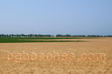
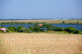
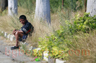
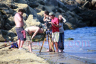
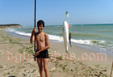
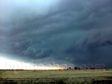
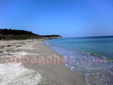
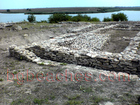

Плаж Дуранкулак - Пътеводител
За Дуранкулак
Дуранкулак е дестинация по българското Черноморие. Това място предлага пясъчен плаж, летни удобства, което го прави идеално за плажни туристи, семейства. Българското Черноморие простира на 378 километра и Дуранкулак има своя уникален характер и атракции.
Какво да очаквате
Плажът в Durankulak запазва естествен вид с ограничена инфраструктура. Пясъкът е естествен, без редове от шезлонги и масов туризъм. Водата е чиста, а атмосферата е спокойна и релаксираща. Заведенията за храна са ограничени и семейни. Това е място за тези, които ценят тишината и природата над удобствата.
Как да стигнете и практична информация
Достъпът до Durankulak може да изисква собствен транспорт, тъй като обществените връзки са ограничени. Настаняването е предимно в малки семейни хотели и къщи за гости (40-80 лв/нощувка). Препоръчва се да носите необходимото, тъй като магазините и услугите може да са ограничени.
Близки атракции
Освен плажа, посетителите могат да разгледат околните забележителности. Българският бряг съчетава природна красота с исторически места, традиционни села и възможности за туризъм, водни спортове и културни преживявания.
Най-добро време за посещение
Юни и септември предлагат отлично време с по-малко туристи и по-добри цени в сравнение с пиковите юли-август. Водата е достатъчно топла за комфортно плуване от средата на юни до средата на септември. За най-тихото преживяване и най-добра стойност, помислете за края на май или началото на октомври.
Съвети за посетители
Фотогалерия
Разгледайте нашата колекция от снимки от Дуранкулак, показващи плажа, съоръженията и атмосферата. Тези автентични изображения ви помагат да разберете какво да очаквате и да планирате посещението си ефективно.
Жици
Образцов дом
Работа на полето- 
Море от злато - 
Дуранкулашкото езеро - 
На пътя
Пшеница
Панорамна гледка
Началото на плажа
Крайбрежна ивица
Плажа на Дуранкулак
Крайбрежната ивица на Дуранкулак- 
Сцена
Ограда- 
Млад рибар на Дуранкулак
Лада на плажа
Каруцари, внимание!
Каруца на плажа- 
Буря над Дуранкулак
Граничен плаж- 
Още една снимка от Румънския бряг
Дуранкулашки разкопки- 
Дуранкулашки разкопки 2
Още една снимка от плажа на Дуранкулак
Любов